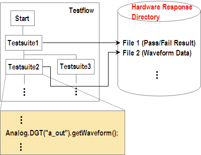

Hardware response files
Hardware response files contain hardware response data such as analog waveform data, measurement values and so on, or the pass/fail result of a test suite.
When set to store mode, the emulator saves the hardware response data in the hardware response file.
The hardware response files correspond to each execution of Supported test suites and test method APIs for retrieving data.
The hardware response file is created in the directory that is specified for a particular testflow as described in Preparing Hardware Response files.

In other words, a hardware response file is related to an execution of a test suite or test method API. The file name of each hardware response file is determined by the related test suite and test method API name:
Testsuite;MAPI; call#; site#
Testsuite |
Executed test suite |
MAPI |
Name of the used test method API |
call# |
A counter corresponding to how many times the test method API is called from the test suite |
site# |
A query focus site number |
Example
The hardware response file TS1;Analog.DGT("a_out").getWaveform(1);1;1
is related to the first execution of the Analog.DGT("a_out").getWaveform() API
called on site 1 in the method program in the TS1 test suite. Note that a
hardware response file name contains a default input value even if the value was not set in the
related API. This is the reason why the file name contains Waveform(1) even if
"1" is not set for the API.
Functional changes
- Introduced before SmarTest 6.3.2